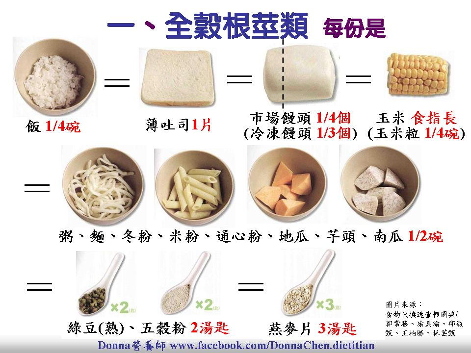
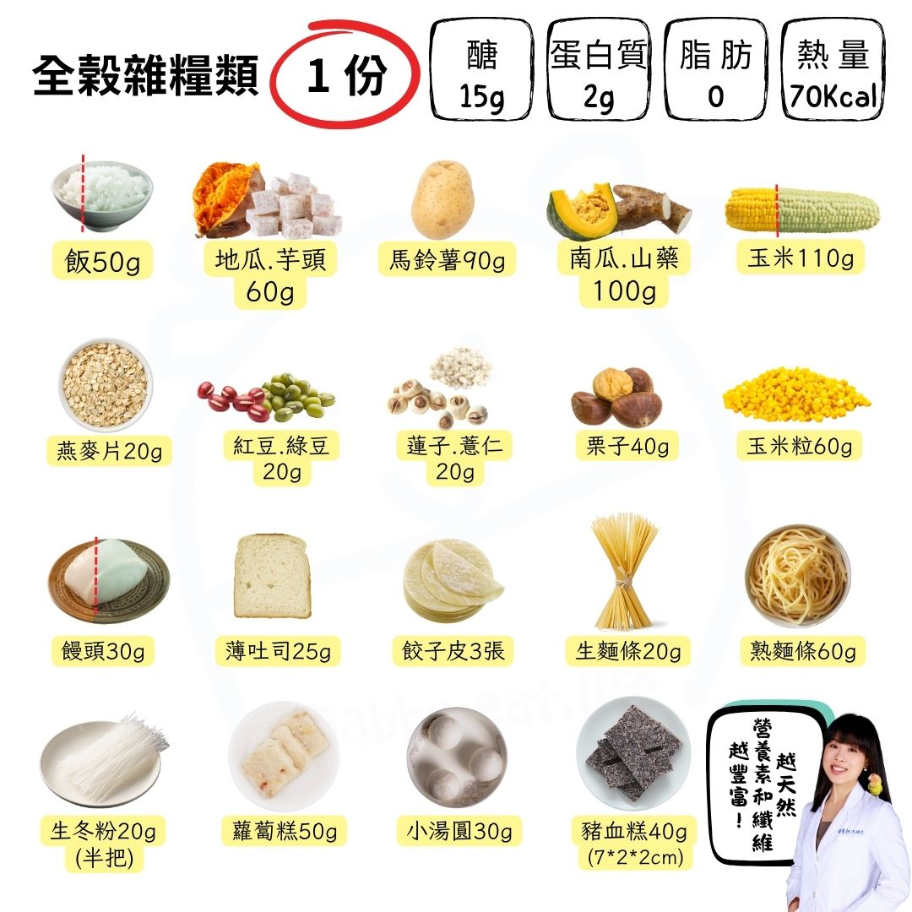
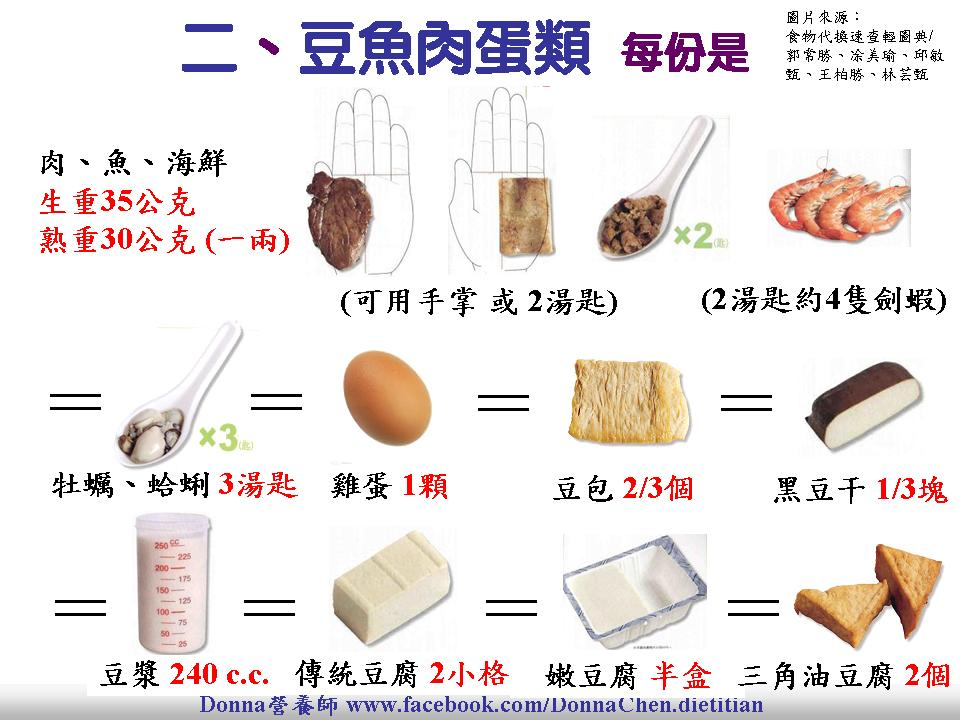
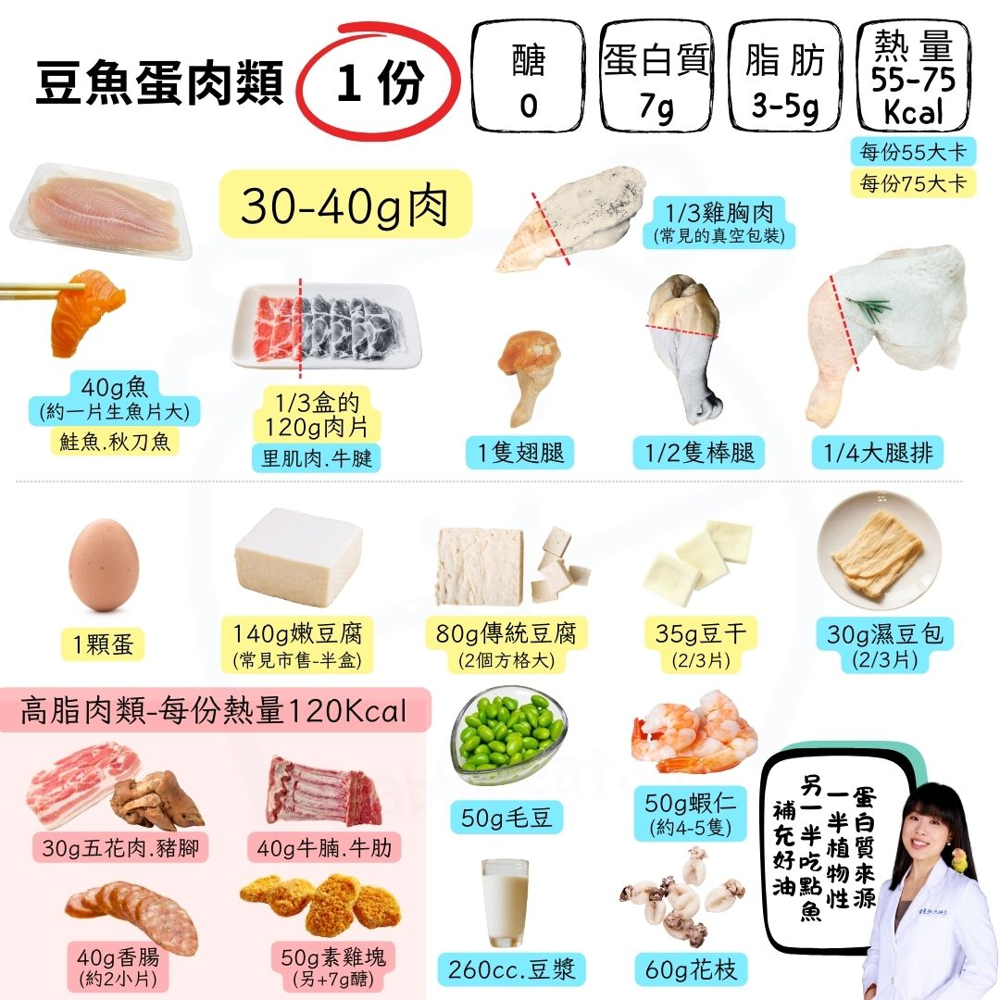
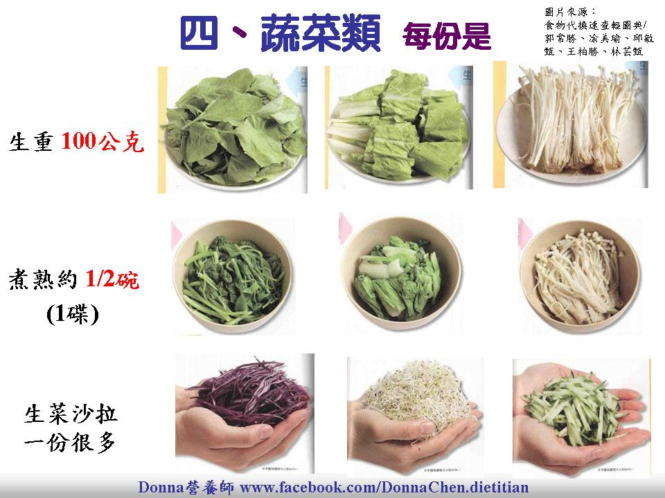
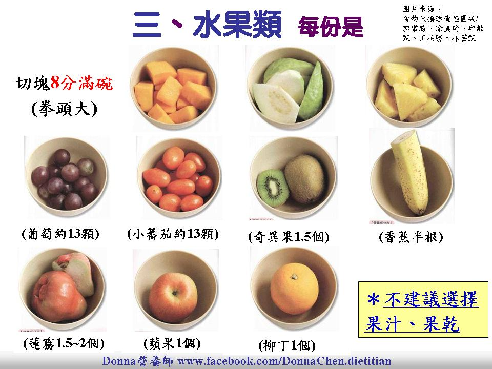
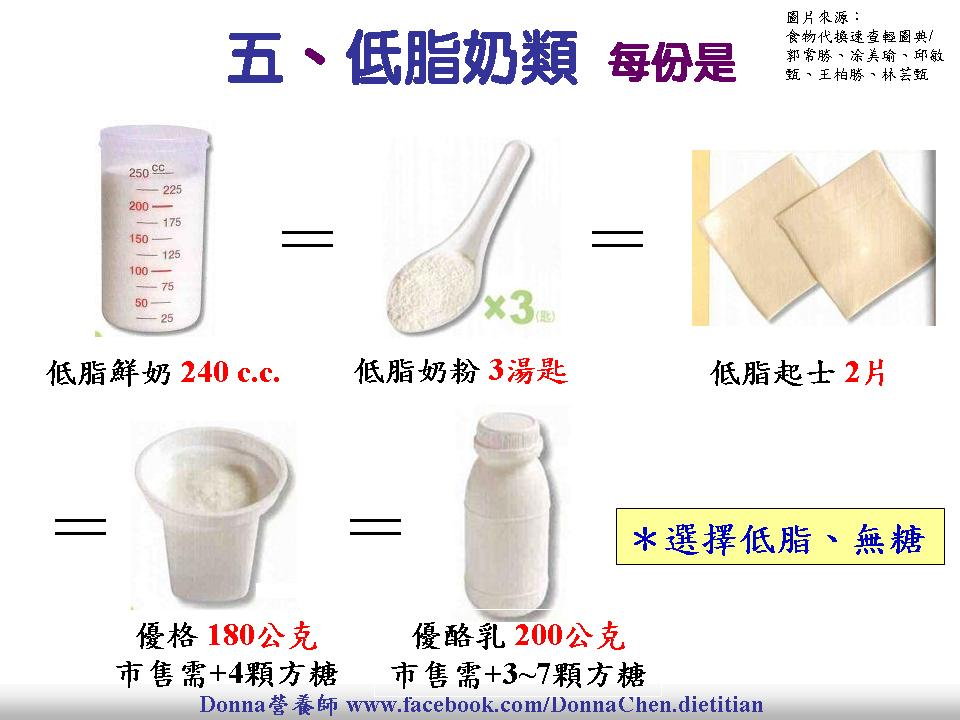
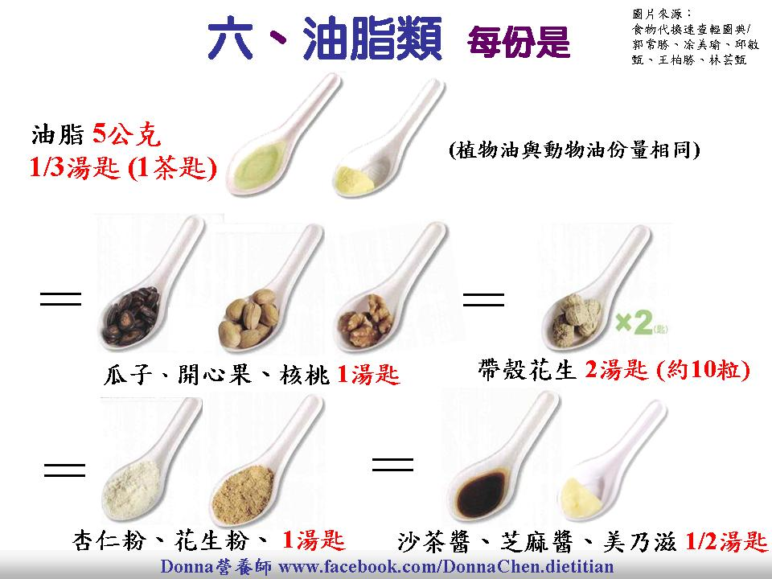

全榖根莖類 1份 = 70 kcal
每份含：蛋白質 2g · 醣類 15g · 脂肪 微量
用來控制醣類攝取的核心食物類別
用來控制醣類攝取的核心食物類別
1份 醣 15g
1份 蛋白質 2g
1份 70 kcal
| 食物 | 1份重量 | 醣類 | 蛋白質 | 熱量 |
|---|---|---|---|---|
| 白飯 | 50g (¼碗) | 15g | 2g | 70 kcal |
| 粥/稀飯 | 125g (½碗) | 15g | 2g | 70 kcal |
| 薄吐司 | 25g (1片) | 15g | 2g | 70 kcal |
| 燕麥片 | 20g (3湯匙) | 15g | 2g | 70 kcal |
| 地瓜 | 55g (½碗) | 15g | 2g | 70 kcal |
| 馬鈴薯 | 90g (½碗) | 15g | 2g | 70 kcal |
| 南瓜 | 110g (½碗) | 15g | 2g | 70 kcal |
| 玉米粒 | 65g (5湯匙) | 15g | 2g | 70 kcal |
參考圖片


豆魚蛋肉類 1份蛋白質 = 7g
每份均含 蛋白質 7g，但脂肪含量依種類差異影響熱量。低脂55kcal · 中脂75kcal · 高脂120kcal↑
低脂 55 kcal/份
中脂 75 kcal/份
高脂 120 kcal/份
每份蛋白質 7g
| 食物 | 達21g蛋白質需要 | 脂肪 | 熱量 | 脂肪等級 |
|---|
參考圖片


蔬菜類 1份 = 25 kcal
每份含：蛋白質 1g · 醣類 5g · 生重 100g = 熟半碗
幾乎不影響熱量，但有助於飽足感和微量營養素
幾乎不影響熱量，但有助於飽足感和微量營養素
每份生重 100g
熟重約 ½碗（1碟）
1份 25 kcal
參考圖片

水果類 1份 = 60 kcal
每份含：醣類 15g · 熱量 60 kcal
份量為 8分滿碗（拳頭大）
份量為 8分滿碗（拳頭大）
每份 醣 15g
每份 60 kcal
份量 8分滿碗
⚠ 不建議選果汁、果乾
參考圖片

乳品類 1份蛋白質 = 8g
每份含：蛋白質 8g · 醣類 12g
全脂150kcal · 低脂120kcal · 脫脂80kcal
全脂150kcal · 低脂120kcal · 脫脂80kcal
全脂 150 kcal
低脂 120 kcal
脫脂 80 kcal
每份 蛋白質 8g
參考圖片

油脂與堅果種子類 1份 = 45 kcal
每份含：脂肪 5g · 熱量 45 kcal
烹調用油、堅果和醬料都算在這個類別
烹調用油、堅果和醬料都算在這個類別
每份 脂肪 5g
每份 45 kcal
參考圖片

🍽️ 今日餐盤
從各類別加入食物，即時計算這一餐的總營養
還沒有食物，請到各類別點「加入今日餐盤」
醣類
0
g
蛋白質
0
g
脂肪
0
g
總熱量
0
kcal